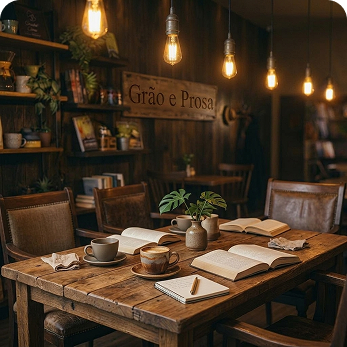

RESERVAR
RESERVAR
RESERVAR
RESERVAR


O Grão & Prosa nasceu para desacelerar a sua rotina. Unimos grãos selecionados e moídos na hora ao aconchego de receitas caseiras, criando um refúgio rústico onde o café é o convite perfeito para uma conversa sem pressa.
100% Artesanal(Grãos
selecionados)
Receitas de
Família(Feitas no
dia)
Ambiente
Acolhedor(Feito para
ficar)
"Tomar café não é apenas beber: é existir."
— Jean-Paul Sartre

Onde o grão vira ritual diante dos seus olhos.

a mesa que te espera para uma boa prosa
 Conheça nosso cardápio
Conheça nosso cardápio